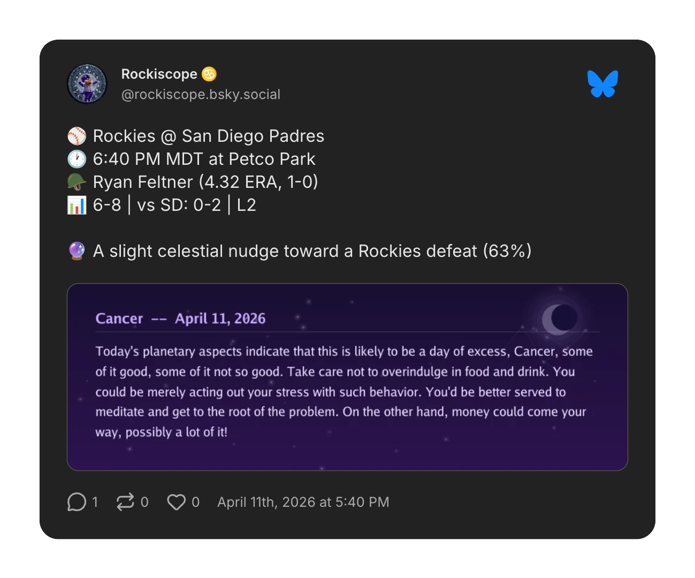

Tyler Lugger
- Software Architect
- Slow runner
- Jam enjoyer
- Happy father


whoami
I'm not not Tyler. I am a staff+ engineer with experience in building reliable and scalable backend systems.
I spend most of my time working across Go and Rust services and infrastructure, with a recent focus in financial platforms where correctness really matters.
On the side, I like to build small utilities and silly automations that make me happy
~/projects
rockiscope
A Bluesky bot that posts the daily horoscope and game prediction for the Colorado Rockies. The Rockies are a Cancer (founded July 5, 1991), so the bot scrapes the daily Cancer horoscope and combines it with a weighted prediction model using team stats, pitcher matchups, and a dash of celestial influence. Built in Go and runs on a Raspberry Pi. Check it out on GitHub.

facial recognition
Over the summer of my first internship, I integrated facial recognition into a distributed IoT platform. This led to a couple of applications including an interface-free coffee counter and a self-targeting dart gun!
desk plant automated-irrigation
To keep my desk plant from dying I automated its watering using a Raspberry Pi, hobby pump, and a soil moisture sensor. This project was featured on the front page of hackster.io.